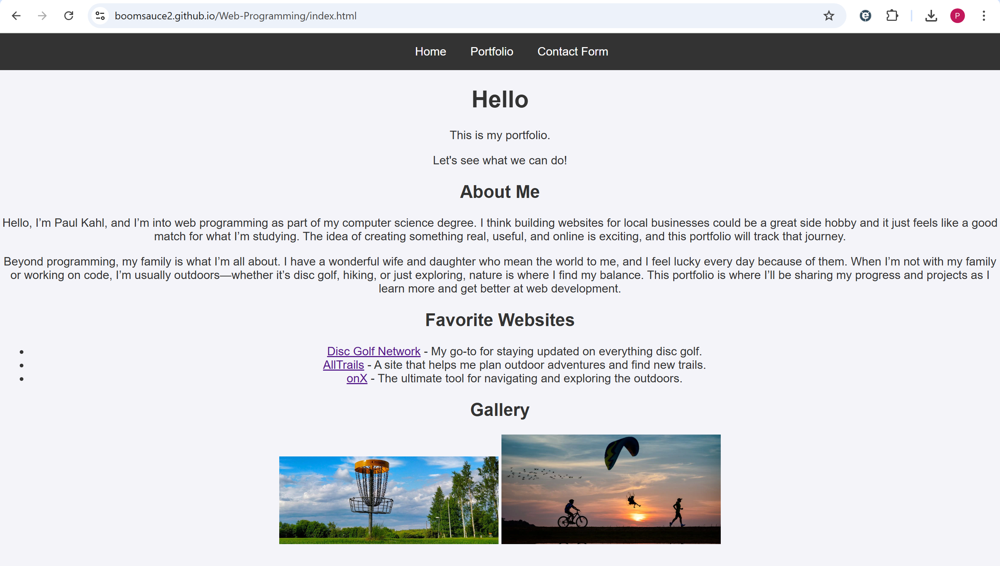

This page serves as a portfolio for my web programming assignments and projects.
This is my introduction to my foundational skills in web programming, including HTML, CSS, and navigation links. It'll be my central portfolio where I show assignments like a contact form, a gallery, and links to my favorite websites. This project will grow as I complete additional assignments in this course.
I had a lot of fun playing with the styling this week.